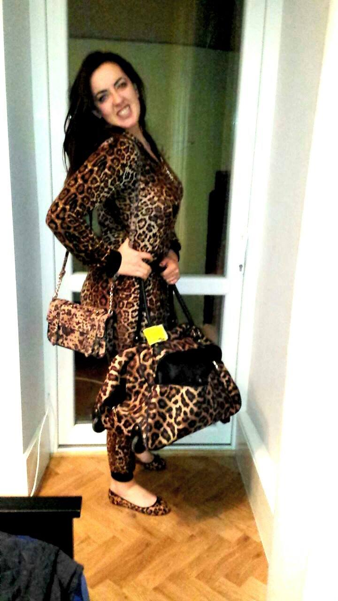
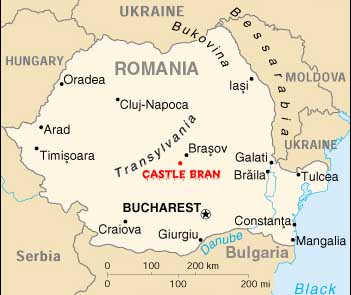

Hi. Lucy Bu Bu.
Scroll down and take a browse around about whats in store for our new years trip. You guessed you were going to...
New York, Paris, Glasgow, Liverpool, Spain, Skiing yep that's right, all WRONG!!!
But you are going to Bucharest, yes the capital of Romania! ... and no I didn't confuse it with Budapest.
